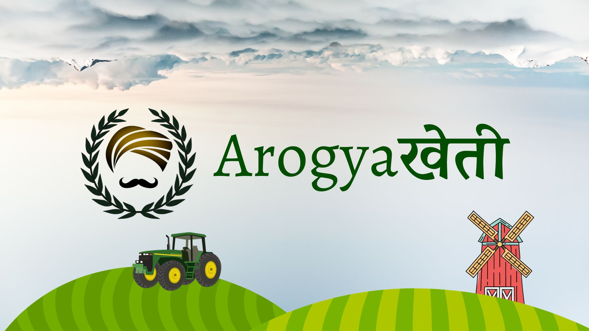

ArogyaKheti

The project ArogyaKheti (Arogyaखेती) aims to provide a user-friendly and simple web
interface for farmers of India to manage their day-to-day activities smartly. It was made as a project for Hack4Earth 2023
Problem Statement
Theme: Sustainability
In India, agriculture is considered as the primary source of income for the majority of the population. That
basically concludes that agricultural sector is the most important sector in the nation. But, on the other hand,
agriculture in
India can be seen as one of the most unorganized sectors too. 47% of the population in India is
directly dependent
on agriculture for their income. With such a great agricultural force, India would usually be expected to have
negligible hunger and food security issues. But, unfortunately, that does not hold true. India ranks #107 on
the Global
Hunger Index and #68 in the Global Food Security Index. This is majorly because of the
lack of proper management among the agricultural sector, especially in the case if small and medium farmers, who
often end up taking wrong decisions due to less education or lack of information.
Our Solution
At ArogyaKheti, we aim to provide a solution to the problem through a combination of innovative
technology and a deep understanding of the agricultural ecosystem. Our platform harnesses the power of data
analytics, providing farmers with valuable insights into crop management, communication, and market trends. Our
mission is to empower farmers with the tools and knowledge they need to thrive in a rapidly evolving agricultural
landscape, ultimately contributing to food security and the eradication of hunger, formally addressing the [UN
SDG](https://sdgs.un.org/goals)- Zero Hunger.
An Insight to the SDG - Zero Hunger:
According to UN, by 2050, we will need to increase the world's food production by 70% to feed the world's population.
Even today, one in eight people of the world do not get enough food to eat. Technology can be used to address these
issues and help farmers to increase their productivity and reduce food waste.
Problem-based Analysis
-
Enhancing Communication between Farmers: The ArogyaKheti forum plays a vital role in enhancing
communication by
providing a collaborative platform where farmers can share knowledge, exchange ideas, and discuss challenges. It
facilitates the exchange of best practices, innovative techniques, and local wisdom, empowering farmers with
valuable insights. By providing a space for open dialogue, the forum helps farmers learn from one another, stay
updated on the latest agricultural trends, 1and collectively navigate obstacles.
-
Helping Farmers stay Updated: ArogyaKheti users are provided with curated news articles which
play a crucial role in keeping
farmers informed with timely and relevant updates on weather, market trends, farming schemes, and policy
changes. It empowers farmers to make informed decisions, reduce risks, and optimize their resources, ultimately
contributing to the sustainability of farming communities.
-
Bridging the Gap between Consumers and Farmers: The public portal displaying the farmer's
produce listings directly connects
farmers with consumers, thereby eliminating the need for middlemen. It ensures transparency and fair pricing for
both farmers and buyers. This direct interaction
not only cuts down on unnecessary costs but also empowers farmers to have greater control over their income. It
contributes to eradicating middlemen and fostering a more equitable and transparent agricultural ecosystem while
supporting the economic well-being of farmers.
-
Guiding Farmers to Make Calculated and Informed Decisions: Our Smart Crop and Fertilizer
Recommendation Systems offer data-driven guidance to farmers. Both use Machine Learning with some real-time
data and soil health data to analyze and provide curated suggestions. Together, they maximize yields, reduce
waste, and promote sustainable farming.
-
AI-enabled Support Channels: AI-powered Chatbots curated for farmers to help them with their
queries and problems. This provides them a 24x7 support channel to get their queries resolved.
-
Farmers and Technology??: Whenever one associates the rural sector with technology, a major
question that arises is that how comfortable will they be?The ArogyaKheti platform is designed to be user-friendly and
accessible to farmers of all ages and backgrounds. It is designed to be multi-lingual and is developed to be a Mobile-first
application, taking in consideration that a computer would be a distant dream in such areas. The platform is
designed to be rather simple, intuitive and easy-to-use, ensuring that farmers can easily navigate the site
and access the information they need, without getting lost in the details.
-
Traditional Methods of Logging-In: In recent times, the Government of India has been pushing
for the e-verification of Aadhar Cards and other such methods of authentication in Government sites. This system
of carrying "Identity Cards" has rooted to a lot of people in the country, for whom we have introduced a system
of FIDC (Farmer's Identity Card). The ArogyaKheti platform is designed to be FIDC-Enabled, which means that farmers
can easily log-in to the platform using their FIDC Cards. But you might be wondering what FIDC is? It is a bit
project specific in this case. No such card exists in real life, but it is a concept that we have visualized hypothetically, where
FIDCs are cards that are issued to farmers by the Government of India, which contain their basic information along with their farm
ownership details. tl;dr it is basically a substitute for Aadhar Card/Pan Card in this case.
Features
- Simple and Intuitive UI/UX
- Mobile First UI to make it widely accessible
- FIDC-based Authentication System
- Crop Recommendation System
- Fertilizer Recommendation System
- The ArogyaKheti Forum
- A Public Portal
- Curated News Delivered Right to the Farmer's Dashboard
- AI-powered Support Channels
- Multi-Lingual Support
Future Plans
This was just the first step to the project, restricted by time limits. I would like to continue ArogyaKheti further and add more features to it. Some of the features that I would like to add:
- Introducing a Blockchain System to Ensure Safe Transactions between Farmers and Buyers
- Introducing a Crisis-Detection System to warn Farmers beforehand
- Introducing a Crowdfunding System to help Farmers gain Capital
- Improving the Translation Quality
- Providing Secure Phone Numbers to avoid data leaks
- Improving the security of the FIDC System
- Introducing a System to help Farmers track their finances and accounts smartly
Tech Stack
-
Frontend: HTML, CSS, Bootstrap, JavaScript, jQuery, AJAX
-
Backend: Django, Python3.11
-
Database: SQLite3
-
Development Environment: VS Code, Vim, Git, GitHub
Build Instructions
Pre-Requisites
Instructions
Clone the repository and navigate to the project directory
git clone https://github.com/arghyagod-coder/ArogyaKheti-Hack4Earth2023.git
cd ArogyaKheti-Hack4Earth2023
Make sure you have [Python](https://www.python.org/downloads/) installed. Install the dependencies.
pip install -r requirements.txt
Run the following commands to create the database and run the server
python manage.py makemigrations
python manage.py migrate
python manage.py runserver
License
GPL v3 License